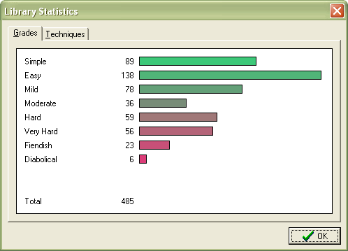
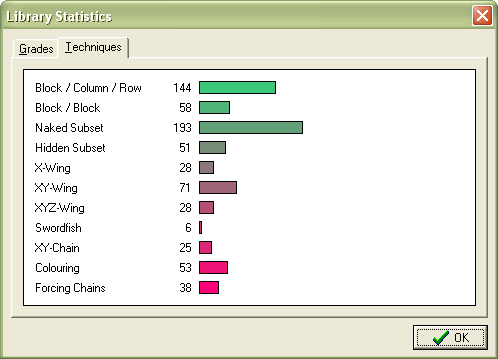

SadMan Sudoku starts with a pre-created "library" of 1000 puzzles. As you extract puzzles to solve them, new puzzles are generated to replace them using the idle time of your computer, so it shouldn't slow down any other applications.
The library is stored in the shared application data folder. The exact location of this folder depends on your particular version of Windows.
| Version of Windows | Location |
|---|---|
| 95, 98, ME | C:\SadMan Software\Sudoku\ |
| NT4 | C:\Winnt\All Users\Application Data\SadMan Software\Sudoku\ |
| XP, 2000, 2003 | C:\Documents and Settings\All Users\Application Data\SadMan Software\Sudoku\ |
| Vista | C:\ProgramData\SadMan Software\Sudoku\ |
(The background creation can be disabled from the options dialog if it causes any problems by with other applications; this may be necessary on some older systems.)
The View -> Library Statistics shows the current content of the library either as a grade histogram, or against the techniques used by the solver.

